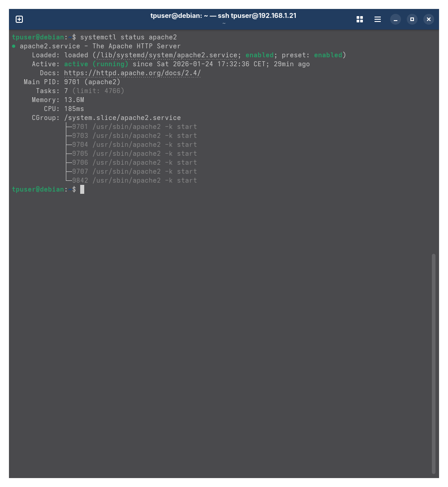
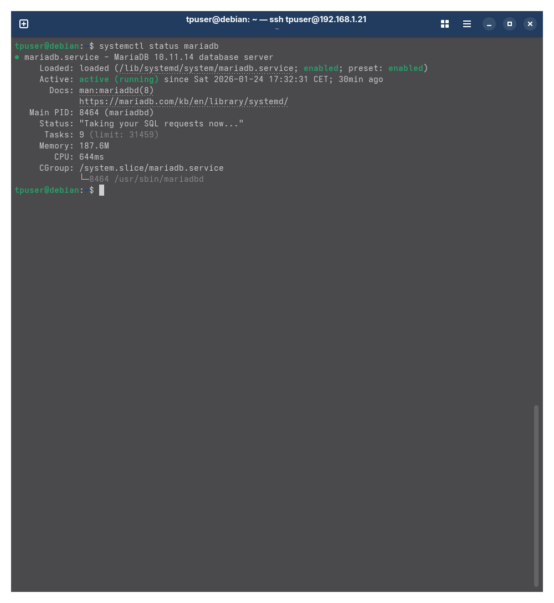
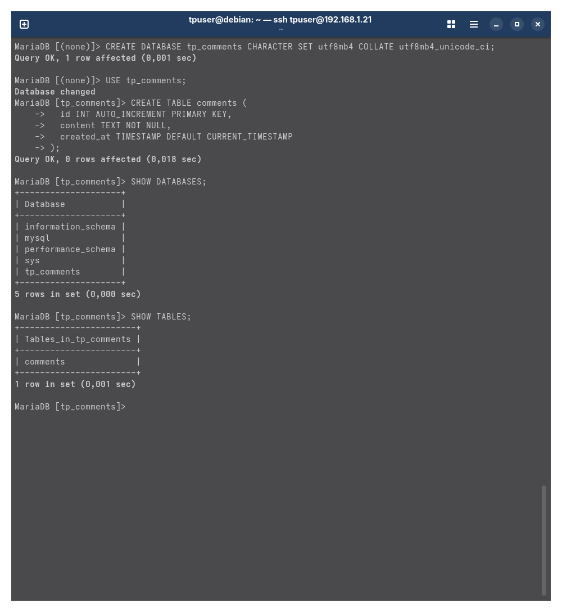
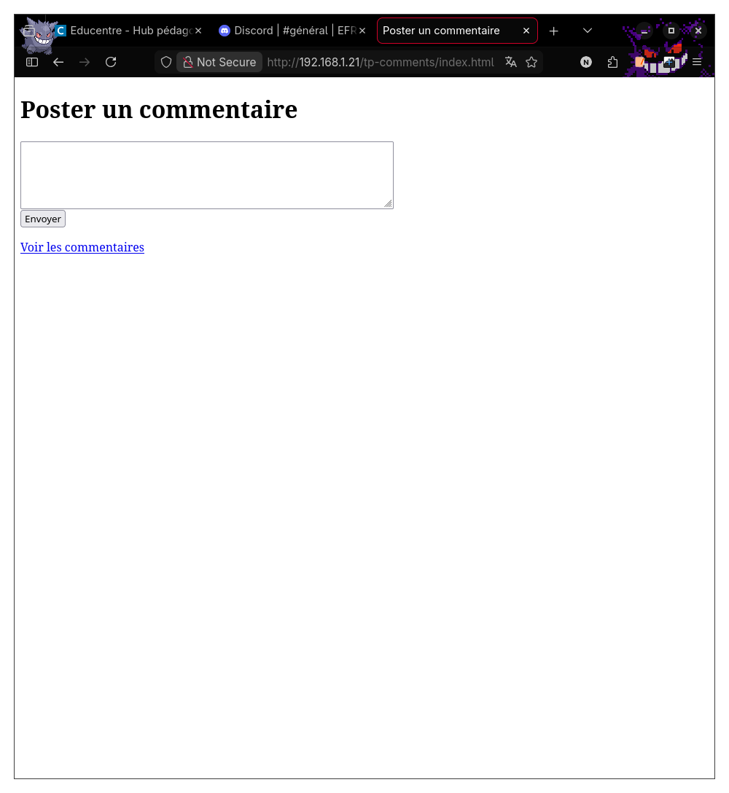
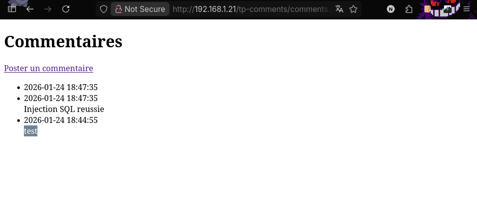
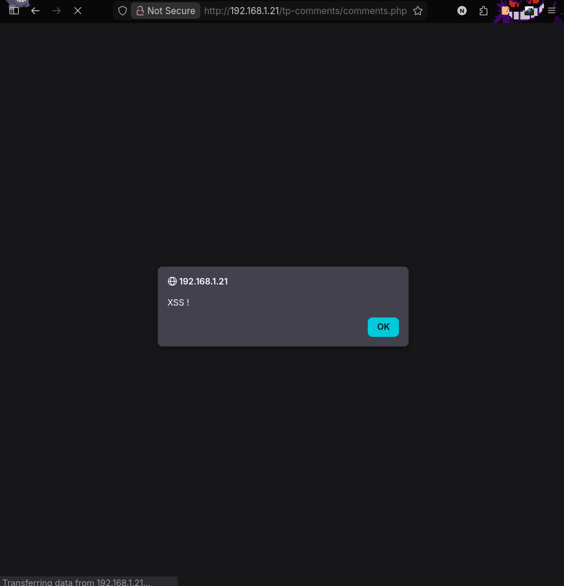
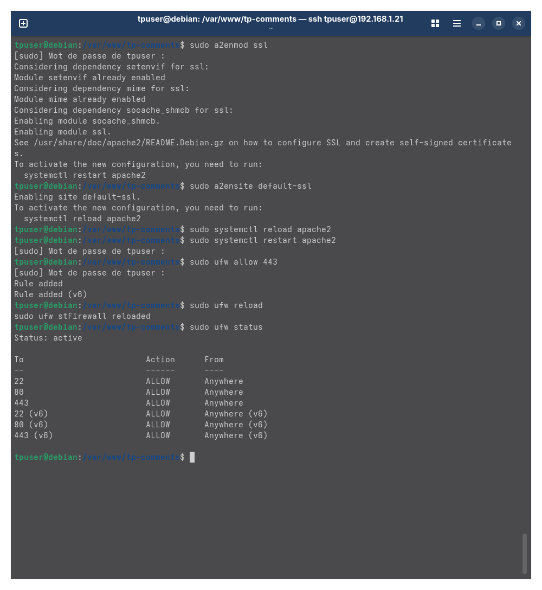
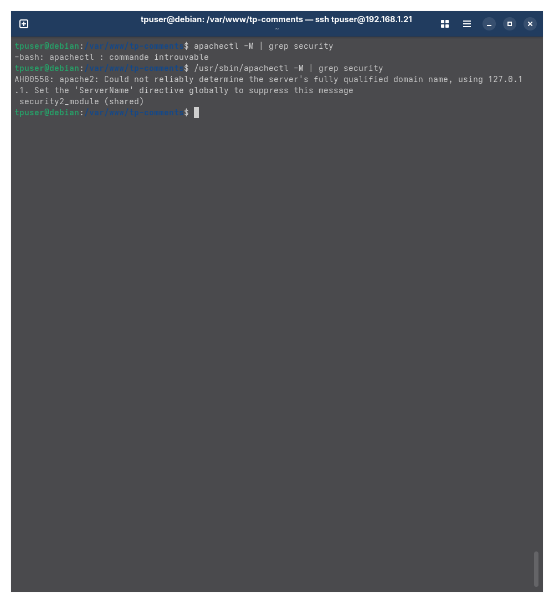

Déploiement et sécurisation d’une application web
Présentation du projet
Ce projet fil rouge avait pour objectif de mettre en place une petite application web permettant de poster et d’afficher des commentaires, puis de l’héberger sur une machine virtuelle Debian.
Le travail portait également sur l’observation de vulnérabilités comme l’injection SQL, le XSS ou l’absence de chiffrement HTTPS, puis sur la mise en place de mesures de durcissement côté infrastructure.
Environnement technique
- VirtualBox pour la virtualisation
- Debian 12 comme serveur
- Apache pour le service web
- PHP pour l’application
- MariaDB pour la base de données
- Réseau en bridge pour accéder au serveur depuis le réseau local
- UFW, HTTPS/TLS et ModSecurity pour le durcissement
Démarche réalisée
1. Mise en place de la machine virtuelle
J’ai installé une VM Debian 12 en version minimale, configurée en réseau bridge afin de pouvoir accéder au serveur depuis mon PC. L’administration s’est faite principalement en SSH.
2. Installation des services
J’ai installé Apache, PHP et MariaDB afin de disposer d’un environnement complet pour héberger l’application web et stocker les commentaires dans une base de données.
sudo apt update
sudo apt upgrade -y
sudo apt install apache2 php php-mysql mariadb-server -y3. Création de la base de données
Une base de données nommée tp_comments a été créée, avec une table comments
permettant d’enregistrer les messages postés par les utilisateurs.
CREATE DATABASE tp_comments CHARACTER SET utf8mb4 COLLATE utf8mb4_unicode_ci;
CREATE TABLE comments (
id INT AUTO_INCREMENT PRIMARY KEY,
content TEXT NOT NULL,
created_at TIMESTAMP DEFAULT CURRENT_TIMESTAMP
);4. Création d’un utilisateur MySQL limité
Pour appliquer le principe du moindre privilège, j’ai créé un utilisateur MySQL dédié à l’application, avec uniquement les droits nécessaires pour lire et insérer des commentaires.
CREATE USER 'tpuser'@'localhost' IDENTIFIED BY '[MOT_DE_PASSE]';
GRANT SELECT, INSERT ON tp_comments.* TO 'tpuser'@'localhost';
FLUSH PRIVILEGES;5. Déploiement de l’application
L’application a été placée dans le répertoire servi par Apache afin d’être accessible depuis un navigateur sur le réseau local.
/var/www/html/tp-comments/
├── index.html
├── submit.php
├── comments.php
└── sql/init.sql6. Observation des vulnérabilités
L’application étant volontairement vulnérable, j’ai observé plusieurs failles : injection SQL, exécution de script XSS et absence de chiffrement lorsque le site était accessible en HTTP.
7. Durcissement de l’infrastructure
Pour réduire les risques côté infrastructure, j’ai mis en place un pare-feu UFW, activé HTTPS/TLS et ajouté ModSecurity comme couche de filtrage au niveau d’Apache.
sudo ufw allow 22
sudo ufw allow 80
sudo ufw allow 443
sudo ufw enable
sudo a2enmod ssl
sudo a2ensite default-ssl
sudo systemctl reload apache2
sudo apt install libapache2-mod-security2 -y
sudo a2enmod security2
sudo systemctl restart apache2Captures et preuves
Les captures ci-dessous montrent les principales étapes du projet : installation des services, base de données, application web, tests de vulnérabilités et sécurisation de l’infrastructure.








Compétences travaillées
- Administration d’un serveur Linux
- Installation et configuration de services web
- Déploiement d’une application PHP / MariaDB
- Gestion des accès à une base de données
- Analyse de vulnérabilités web
- Durcissement d’une infrastructure avec UFW, HTTPS et ModSecurity
- Documentation technique des actions réalisées
Conclusion
Ce projet m’a permis de mettre en pratique plusieurs compétences importantes de l’option SISR : la mise en place d’un serveur, le déploiement d’un service web, la configuration d’une base de données et la sécurisation de l’infrastructure.
Même si l’application restait volontairement vulnérable côté code, les mesures mises en place côté serveur ont permis de réduire la surface d’attaque et de mieux comprendre le rôle de l’infrastructure dans la sécurité d’un service web.